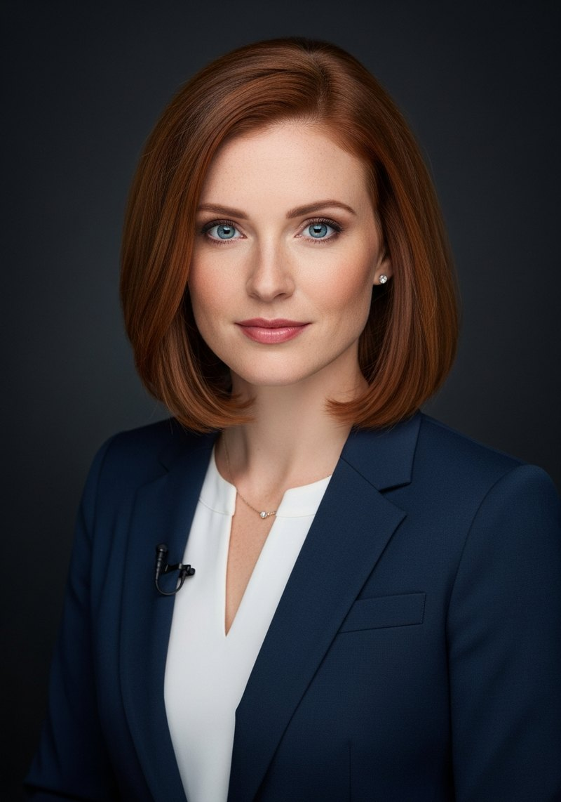
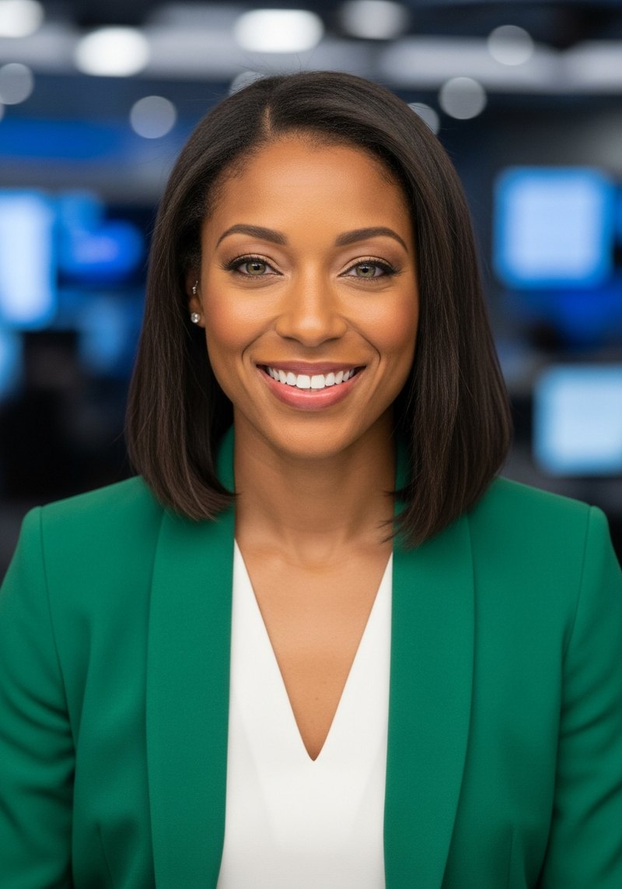

One top financial story each weekday, in 30–45 seconds: the story, the hard numbers, and why it matters. Every fact verified against the source before air and cited on every post. It reports; it never recommends.
AI-GENERATED PRESENTERS · EVERY FACT SOURCED · NEVER FINANCIAL ADVICEEvery number verified against the source before air.
ADRs priced at $149 closed at $168.01 — up 13% — in the largest foreign US listing ever. The story, the numbers, and why it matters.
AI-GENERATED PRESENTER NOT FINANCIAL ADVICE
Maeve Sterling is the anchor of The Market Brief, a daily brief on the market's biggest story. She is an AI-generated presenter — her face, voice, and delivery are produced with generative tools, and every episode says so on screen.
What isn't generated: the facts. Every number Maeve reports is drawn from the day's reporting by established financial news organizations, verified against the source before air, and cited in the caption of every post. The Market Brief covers the top financial stock story each weekday — positive or negative — in four beats: the story, the hard numbers, and why it matters. It reports; it never recommends.
"I'm Maeve Sterling, and this is The Market Brief."
Brooke Ashford is the relief anchor of The Market Brief, taking the desk when Maeve Sterling is away. She is an AI-generated presenter — her face, voice, and delivery are produced with generative tools, and every episode says so on screen.
The standards don't change with the chair: every number Brooke reports is drawn from the day's reporting by established financial news organizations, verified against the source before air, and cited in the caption. The Market Brief reports; it never recommends.
"I'm Brooke Ashford, in for Maeve Sterling — and this is The Market Brief."

Nia Caldwell is a rotation anchor of The Market Brief, sharing the desk with Maeve Sterling and Brooke Ashford. She is an AI-generated presenter — her face, voice, and delivery are produced with generative tools, and every episode says so on screen.
The desk's standards don't rotate: every number Nia reports is drawn from the day's reporting by established financial news organizations, verified against the source before air, and cited in the caption.
"I'm Nia Caldwell, and this is The Market Brief."
Isabela Fuentes is a rotation anchor of The Market Brief, sharing the desk with Maeve Sterling, Brooke Ashford, and Nia Caldwell. She is an AI-generated presenter — her face, voice, and delivery are produced with generative tools, and every episode says so on screen.
The Market Brief is an independent production. It is not affiliated with any brokerage, fund, or issuer, and nothing in it is financial advice.
"I'm Isabela Fuentes, and this is The Market Brief."